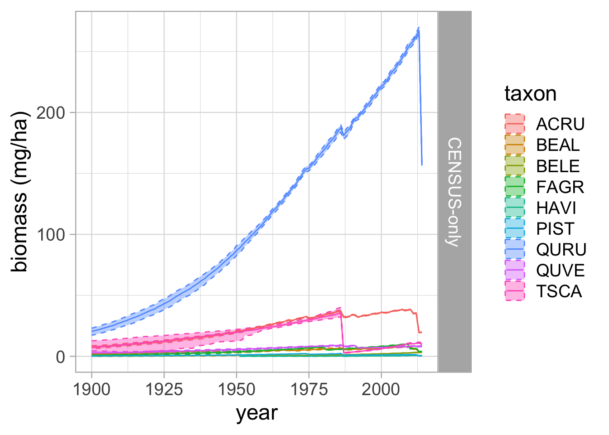

Code
library(rstan)
library(dplyr)
library(reshape2)
library(ggplot2)
library(grid)
library(gridExtra)
library(tidyr)We estimate the parameters of this state-space model in a program called stan which interfaces to R via a package called rstan (cmdstan is another package that is used.)
library(rstan)
library(dplyr)
library(reshape2)
library(ggplot2)
library(grid)
library(gridExtra)
library(tidyr)# load built dataset
dat = readRDS('data/tree_data_HARVARD.RDS')
# class(dat)
#
# names(dat)
taxa = dat$taxa # the taxa abbreviations
years = dat$years # the years where we will estimate increments
# STAN requires you to tell it the dimensions of the inputs and outputs, so we need to define these:
N_years = dat$N_years # number of years
N_Tr = dat$N_Tr # number of trees
N_taxa = dat$N_taxa # number of taxa
X2Tr = dat$X2Tr # vector of tree ids
X2year = dat$X2year # vector of years for each tree
Tr = dat$Tr %>% arrange(stat_id) # arrange the Tree data by ids, and save as Tr
taxon = Tr$taxon # vector of taxon ids
plot = Tr$plot # vector of plot ids
years = dat$years # vector of calendar years
year_lo = min(years) # minimum year
year_hi = max(years) # maximum year
pdbh = exp(dat$logTr) #vector of diameters
list2env(dat, envir = globalenv())# load all the data objects into the environment<environment: R_GlobalEnv>N_C = dat$N_C # vector of Census ids
X2C = dat$X2C # links the Census tree to the increment measurements
X2year_C = dat$X2year_C
allTrees = dat$allTrees %>% arrange(stat_id)
taxon_C = allTrees$taxon
plot_C = allTrees$plot
distance = allTrees$distanceThe stan model code is stored in the models/ folder. The CENSUS + Census model is the growth_model_CENSUS_CENSUS.stan. If you are working through this tutorial on R, you can view this file in your environment. We won’t dive too deep into how to write your own stan model, but note that this model includes several blocks:
writeLines(readLines("models/growth_model_CENSUS.stan"))// RW + CENSUS MODEL
data {
int<lower=0> N_C; // number of trees between census and RW data
int<lower=0> N_Dobs; // number of census diameter measurements
int<lower=0> N_Tr; // number of trees with rw measurements
int<lower=0> N_years; // number of years
int<lower=0> N_X_C; // number of values to estimate
//int<lower=0> N_Xobs; // number of increments measured
int<lower=0> N_taxa; // total number of taxa
int<lower=0> Tr2X_C[N_Tr]; // maps DBH measurements to estimated increment
int<lower=0> X2C[N_X_C]; // connects values to trees
int<lower=0> X2year_C[N_X_C]; // connects values to years
int<lower=0> X2Tr_C[N_X_C]; // connects values to years
real logTr[N_Tr]; // log(DBH from meta data file)
//real logXobs[N_Xobs]; // increments
real logDobs[N_Dobs]; // diameter measurements
int<lower=0> idx_C [N_C, 3]; // points to the start and stop point in values for each tree
//int<lower=0> Xobs2X_C[N_Xobs]; // index to relate measurements to estimated X vals
int<lower=0> Dobs2X [N_Dobs]; // connects census diameter measurements to vals
int<lower=0> Tr2taxon_C[N_C];
}
parameters {
real beta0; // prior for beta(tree)
real<lower=0> beta_sd; // prior for beta(tree)
real<lower=0> beta_t_sd; // prior for beta(year)
real beta[N_C]; // in likelihood of X vals
real<lower=1e-6> sig_x[N_taxa]; // in likelihood of X vals
//real<lower=1e-6> sig_x_obs; // in likelihood for increments
real<lower=1e-6> sig_d_obs; // in likelihood for diameters
real<lower=-30, upper=80> D0[N_C]; // starting diameter values
vector<lower=1e-6>[N_X_C] X; // estimated annual incrememnts
matrix[N_years, N_taxa] beta_t;
}
transformed parameters {
// process evolution
vector<lower=-30>[N_X_C] D;
// increment diameters from D0 according to estimated Xs
for (tree in 1:N_C){
D[idx_C[tree,2]] = D0[tree] + 2.0 * X[idx_C[tree,2]] / 10.0;
for (val in (idx_C[tree,2]+1):(idx_C[tree,3])){
D[val] = D[val-1] + 2.0 * X[val] / 10.0;
}
}
}
model{
// priors
beta0 ~ normal(0, 1.0/0.00001);
//sig_x_obs ~ uniform(1e-6, 2.0);
sig_d_obs ~ uniform(1e-6, 1000);
// sig_x ~ uniform(1e-6, 1000);
beta_sd ~ uniform(1e-6, 1000);
beta_t_sd ~ uniform(1e-6, 1000);
for(tree in 1:N_C) {
D0[tree] ~ uniform(-30,80);
beta[tree] ~ normal(beta0, beta_sd);
}
// temporal species effect prior
for(year in 1:N_years) {
beta_t[year,] ~ normal(0, beta_t_sd);
}
for (taxon in 1:N_taxa) {
sig_x[taxon] ~ uniform(1e-6, 1000);
}
// likelihood
// increment likelihood
for (val in 1:N_X_C){
// X[val] ~ lognormal(beta[X2C[val]], sig_x);
X[val] ~ lognormal(beta[X2C[val]] + beta_t[X2year_C[val], Tr2taxon_C[X2Tr_C[val]]], sig_x[Tr2taxon_C[X2Tr_C[val]]]);
}
// // RW estimates against RW increments
// for (inc in 1:N_Xobs){
// logXobs[inc] ~ normal(log(X[Xobs2X_C[inc]]), sig_x_obs);
// }
// diameter estimates against diameter measurements
for (dbh in 1:N_Dobs){
if (logDobs[dbh] == -999){
} else {
//print(D[Dobs2X[dbh]]);
logDobs[dbh] ~ student_t(3, log(D[Dobs2X[dbh]]), sig_d_obs);
}
}
// diameter estimates against diameter measurements
for (tree in 1:N_Tr){
if (logTr[tree] == -999){
} else {
logTr[tree] ~ student_t(3, log(D[Tr2X_C[tree]]), sig_d_obs);
}
}
}# settings
iter = 500
nchains = 1
compiled_CENSUS = stan_model(file = paste0('models/growth_model_CENSUS.stan'))
fit_CENSUS = sampling(compiled_CENSUS,
data = dat,
iter = iter,
chains = nchains,
verbose=TRUE)We will load the output from the fitted model (fitted model object and parameter posterior distributions).
variables = names(post_CENSUS[1,1,])
allSX = grep('sig_x\\[',variables)
post_sx = post_CENSUS[,,allSX]
dim(post_sx)[1] 250 9colnames(post_sx) = taxa
post_sx_melt = melt(post_sx)
colnames(post_sx_melt) = c('iteration', 'species_code', 'sigma_x')
post_sx_melt$model = 'CENSUS'
sig_x_mean = post_sx_melt %>%
group_by(species_code) %>%
dplyr::summarize(sig_x_mean = mean(sigma_x))
sig_x_mean = sig_x_mean[order(sig_x_mean$sig_x_mean),]
post_sx_melt$species_code = factor(post_sx_melt$species_code, levels=sig_x_mean$species_code)
# plot up the species level increment uncertainties
p = ggplot(data=post_sx_melt) +
# geom_boxplot(aes(x=species_code, y=sigma_x, colour=model, fill=model), alpha=0.5) +
geom_violin(aes(x=species_code, y=sigma_x, colour=model, fill=model), alpha=0.5) +
theme_bw(14) +
xlab('Species') +
ylab('sigma_x')
print(p)Here we will also look at some summary figures for the beta_t parameter. For each species, there is a beta_t parameter for each year. This parameter is conceptually the same as a forest chronology; it is a time series that describes the common forest growth signal for a given species.
We could look at summary plots for the posterior samples for a given year for a given species, and do the same for all year BY species combinations. This would be (9 species) x (115 years) = 1035 trace plots, so we don’t look at all of them here.
We do want to visualize the beta_t chronology-like parameters as species-specific time series.
allBTs = grep('beta_t\\[',variables)
post_bt = post_CENSUS[,,allBTs]
post_bt_melt = melt(post_bt)
post_bt_melt$model = 'CENSUS-only'
bt_pars_split = strsplit(as.vector(post_bt_melt$parameters), '\\[|\\,|\\]')
post_bt_melt$species_code = taxa[sapply(bt_pars_split, function(x) as.numeric(x[[3]]))]
post_bt_melt$year = years[sapply(bt_pars_split, function(x) as.numeric(x[[2]]))]
colnames(post_bt_melt) = c('iteration', 'parameter', 'beta_t', 'model', 'species_code', 'year')
beta_t_quant = post_bt_melt %>%
group_by(model, species_code, year) %>%
dplyr::summarize(beta_t_lo = quantile(beta_t, 0.025),
beta_t_mid = quantile(beta_t, 0.5),
beta_t_hi = quantile(beta_t, 0.975),
beta_t_mean = mean(beta_t),
.groups = 'keep')
p = ggplot(data=beta_t_quant) +
geom_hline(aes(yintercept=0), lty=2, lwd=1.2) +
geom_point(aes(x=year, y=beta_t_mid)) +
geom_linerange(aes(x=year, ymin=beta_t_lo, ymax=beta_t_hi)) +
xlab('year') +
ylab('beta_t') +
# xlim(c(year_lo, year_hi)) +
theme_bw(16) +
facet_grid(species_code~.)
print(p)Here we visualize inferred and observed diameter data for one tree (Tree 1). Filled circles indicate the diameter measurement included in this model and hollow circles are census diameter measurements not included in the model.
allDs = grep('D\\[',variables)
post_d = post_CENSUS[,,allDs]
tree = 1
print(tree)[1] 1in.RW = tree %in% X2Tr
# determine which estimates correspond to this tree
inds_C = which(X2Tr_C == tree)
yrinds_C = X2year_C[inds_C]
# C
dbh_iter_C = t(post_d[,inds_C])
dbh_iter_C = data.frame(dbh_iter_C)
dbh_iter_C = data.frame(year=years[yrinds_C], dbh_iter_C)
dbh_mean_C = apply(dbh_iter_C[,2:ncol(dbh_iter_C)], 1, mean, na.rm=TRUE)
dbh_quant_C = t(apply(dbh_iter_C[,2:ncol(dbh_iter_C)], 1,
function(x) quantile(x, c(0.025, 0.5, 0.975), na.rm=TRUE)))
dbh_tree_C = data.frame(d_mean = dbh_mean_C,
d_median = dbh_quant_C[,2],
d_lo = dbh_quant_C[,1],
d_hi = dbh_quant_C[,3],
year = years[yrinds_C],
model = 'Census')
dbh_tree = dbh_tree_C
idx_d_obs_C = which(Dobs$stat_id == tree)
dbh_obs_C = data.frame(d_obs = Dobs$dbh[idx_d_obs_C],
year = years[Dobs$year[idx_d_obs_C]])
stem_id = Dobs$ID[idx_d_obs_C][1]
if (in.RW){
idx_d_obs = which(Tr$stat_id == tree)
dbh_obs = data.frame(d_obs = Tr$dbh[idx_d_obs],
year = years[Tr$year[idx_d_obs]])
} else {
dbh_obs = data.frame(d_obs = numeric(0),
year = numeric(0))
}
# Create a text
grob = grobTree(textGrob(paste0('Tree ', tree, '; ID ', stem_id, '; Species ', taxon_C[tree] ), x=0.05, y=0.9, hjust=0,
gp=gpar(col="black", fontsize=18)))
p1 = ggplot() +
geom_ribbon(data=dbh_tree, aes(x=year, ymin=d_lo, ymax=d_hi, fill=model), alpha=0.5) +
geom_line(data=dbh_tree, aes(x=year, y=d_median, colour=model)) +
# geom_point(data=dbh_obs, aes(x=year, y=d_obs), size=2) +
geom_point(data=dbh_obs_C, aes(x=year, y=d_obs), size=2, shape=1) +
xlab('year') +
ylab('dbh (cm)') +
xlim(c(year_lo, year_hi)) +
theme_bw(16) +
annotation_custom(grob)
print(p1)allRWs = grep('X\\[',variables)
post_rw = post_CENSUS[,,allRWs]
inds_C = which(X2Tr_C == tree)
yrinds_C = X2year_C[inds_C]
rw_iter_C = t(post_rw[,inds_C])
rw_iter_C = data.frame(rw_iter_C)
rw_iter_C = data.frame(year=years[yrinds_C], rw_iter_C)
rw_mean_C = apply(rw_iter_C[,2:ncol(rw_iter_C)], 1, mean, na.rm=TRUE)
rw_quant_C = t(apply(rw_iter_C[,2:ncol(rw_iter_C)], 1,
function(x) quantile(x, c(0.025, 0.5, 0.975), na.rm=TRUE)))
rw_tree_C = data.frame(x_mean = rw_mean_C,
x_median = rw_quant_C[,2],
x_lo = rw_quant_C[,1],
x_hi = rw_quant_C[,3],
year = years[yrinds_C],
model = 'Census')
rw_tree = rw_tree_C
rw_obs = data.frame(x_obs = numeric(0),
year = numeric(0))
p2 = ggplot() +
geom_ribbon(data=rw_tree, aes(x=year, ymin=x_lo, ymax=x_hi, fill=model), alpha=0.5) +
geom_line(data=rw_tree, aes(x=year, y=x_median, colour=model)) +
geom_point(data=rw_obs, aes(x=year, y=x_obs), size=2, alpha=0.4) +
xlab('year') +
ylab('rw (mm)') +
xlim(c(year_lo, year_hi)) +
theme_bw(16)
grid.arrange(p1, p2, nrow = 2)# code to estimate biomass
choj = read.csv('data/acronym_to_chojnacky_v0.1.csv', stringsAsFactors = FALSE)
# use HAVI (average of all hardwoods) for those species not found in chojnacky equations
gen = choj[which(choj$acronym == 'HAVI'),]
choj = choj %>% filter(acronym %in% unique(taxon_C))
head(choj) acronym common.name chojnacky.class beta0 beta1
1 ACRU red maple Aceraceae < 0.50 spg -2.0470 2.3852
2 HAVI average of all hardwoods -2.2424 2.4498
3 BELE sweet birch Betulaceae >= 0.60 spg -2.2652 2.5349
4 BEAL yellow birch Betulaceae 0.50-0.59 spg -1.8096 2.3480
5 FAGR american beech Fagaceae; deciduous -2.0705 2.4410
6 QURU northern red oak\xca Fagaceae; deciduous -2.0705 2.4410Now we visualize biomass for a single tree through time.
tree = 1
agb_tree = agb_melt[which(agb_melt$tree == tree),]
agb_tree_quants = agb_tree %>%
dplyr::group_by(tree, year, model) %>%
dplyr::summarize(agb_mean = mean(value, na.rm=TRUE),
agb_median = quantile(value, c(0.5)),
agb_lo = quantile(value, c(0.025)),
agb_hi = quantile(value, c(0.975)), .groups = 'keep')
species_id = agb_tree$taxon[1]
stem_id = Tr$id[which(Tr$stat_id == tree)]
grob <- grobTree(textGrob(paste0('Tree ', tree, '; Stem ID ', stem_id, '; Species ', species_id ), x=0.05, y=0.9, hjust=0,
gp=gpar(col="black", fontsize=22)))
p1 = ggplot() +
geom_ribbon(data = agb_tree_quants, aes(x = year, ymin = agb_lo, ymax = agb_hi, fill = model), alpha=0.5) +
geom_line(data=agb_tree_quants, aes(x=year, y=agb_median, colour = model)) +
xlab('year') +
ylab('agb (kg)') +
xlim(c(year_lo, year_hi)) +
theme_bw(16) +
# ggtitle(paste0('Tree ', i)) +
annotation_custom(grob)
# first for CENSUS only model
abi = apply(agb_array_CENSUS, c(1,3), function(x) diff(x))
abi = aperm(abi, c(2, 1, 3))
abi_melt = melt(abi)
colnames(abi_melt) = c('tree', 'year', 'iter', 'value')
abi_melt = abi_melt %>% filter(!is.na(value))
abi_melt$year = years[abi_melt$year]
# abi_melt$plot = plot[abi_melt$tree]
abi_melt$taxon = taxon_C[abi_melt$tree]
abi_melt$model = rep("CENSUS-only", nrow(abi_melt))
abi_melt$type = rep('abi',nrow(abi_melt))
tree=1
abi_tree = abi_melt[which(abi_melt$tree == tree),]
abi_tree_quants = abi_tree %>%
dplyr::group_by(tree, year, model) %>%
dplyr::summarize(abi_mean = mean(value, na.rm=TRUE),
abi_median = quantile(value, c(0.5)),
abi_lo = quantile(value, c(0.025)),
abi_hi = quantile(value, c(0.975)), .groups = 'keep')
p2 = ggplot() +
geom_ribbon(data = abi_tree_quants, aes(x = year, ymin = abi_lo, ymax = abi_hi, fill = model), alpha=0.5) +
geom_line(data=abi_tree_quants, aes(x=year, y=abi_median, colour = model)) +
xlab('year') +
ylab('abi (kg / year)') +
xlim(c(year_lo, year_hi)) +
theme_bw(16) #+
# ggtitle(paste0('Tree ', i)) +
# annotation_custom(grob)
# print(p1)
grid.arrange(p1, p2, nrow = 2)
In this workflow we only consider trees that are above 5 cm diameter. To satisfy this constraint we need to filter out all model inferred tree diameters that are less than 5 cm. For a given tree, for a given year, if the mean diameter (across all iterations) is less than 5 cm, the samples are replaced with NA. This step ensures they won’t contribute to the species and site total biomass we will calculate.
# first for CENSUS only model
for (tree in 1:N_C){
for (year in 1:N_years){
# determine mean DBH for this year and tree
dbh_mean = mean(dbh_array_CENSUS[tree, year, ], na.rm=TRUE)
# if smaller than 5 cm., eliminate the data
if (is.na(dbh_mean) | dbh_mean >= 5) next
dbh_array_CENSUS[tree, year, ] = rep(NA, iter)
agb_array_CENSUS[tree, year, ] = rep(NA, iter)
}
}The sampling protocol used at Harvard Forest for the CENSUS trees is
# we need to adjust the biomass units from kg/plot to Mg/ha
outer_factor = (1 / (pi*20^2)) * (1/0.0001) * (1/1000)
agb_array_CENSUS[,,] = agb_array_CENSUS[,,] * outer_factor# melt down agb_array to data frame
agb_melt = melt(agb_array_CENSUS)
colnames(agb_melt) = c('tree','year','iter','value')
agb_melt = agb_melt %>% filter(!is.na(value))
agb_melt$year = years[agb_melt$year]
agb_melt$plot = plot_C[agb_melt$tree]
agb_melt$taxon = taxon_C[agb_melt$tree]
agb_melt$model = rep("CENSUS-only", nrow(agb_melt))
agb_melt$type = rep('ab',nrow(agb_melt))
# first for CENSUS only model
abi = apply(agb_array_CENSUS, c(1,3), function(x) diff(x))
abi = aperm(abi, c(2, 1, 3))
abi_melt = melt(abi)
colnames(abi_melt) = c('tree', 'year', 'iter', 'value')
abi_melt = abi_melt %>% filter(!is.na(value))
abi_melt$year = years[abi_melt$year]
abi_melt$plot = plot_C[abi_melt$tree]
abi_melt$taxon = taxon_C[abi_melt$tree]
abi_melt$model = rep("CENSUS-only", nrow(abi_melt))
abi_melt$type = rep('abi',nrow(abi_melt))agb_taxon_by_iter = agb_melt %>%
group_by(year, iter, taxon, plot, model) %>%
# # sum up the taxon-level information by plot, iteration, year
summarise( AGB.taxon.plot = sum(value, na.rm =TRUE)) %>% ungroup() %>%
#
# get the mean value across plots for each iteration:
group_by(year, iter, taxon, model) %>%
# dplyr::summarize(AGB.iter.mean = mean(value, na.rm = TRUE),
# .groups='keep')
dplyr::summarize(AGB.iter.mean = mean(AGB.taxon.plot, na.rm = TRUE),
.groups='keep')`summarise()` has grouped output by 'year', 'iter', 'taxon', 'plot'. You can
override using the `.groups` argument.agb_taxon_summary = agb_taxon_by_iter %>%ungroup() %>%
group_by(year, taxon, model) %>%
dplyr::summarize(AGB.mean = mean(AGB.iter.mean, na.rm = TRUE),
AGB.sd = sd(AGB.iter.mean, na.rm=TRUE),
AGB.lo = quantile(AGB.iter.mean, c(0.025), na.rm=TRUE),
AGB.hi = quantile(AGB.iter.mean, c(0.975), na.rm=TRUE),
.groups='keep')
abi_taxon_by_iter = abi_melt %>%
group_by(year, iter, taxon, plot, model) %>%
summarise( AGBI.taxon.plot = sum(value, na.rm =TRUE)) %>% ungroup() %>%
group_by(year, iter, taxon, model) %>%
dplyr::summarize(ABI.iter.mean = mean(AGBI.taxon.plot, na.rm = TRUE),
.groups='keep')`summarise()` has grouped output by 'year', 'iter', 'taxon', 'plot'. You can
override using the `.groups` argument.#taxon summary data without plot
abi_taxon_summary = abi_taxon_by_iter %>% ungroup() %>%
group_by(year, taxon, model) %>%
dplyr::summarize(ABI.mean = mean(ABI.iter.mean, na.rm = TRUE),
ABI.sd = sd(ABI.iter.mean, na.rm=TRUE),
ABI.lo = quantile(ABI.iter.mean, c(0.025), na.rm=TRUE),
ABI.hi = quantile(ABI.iter.mean, c(0.975), na.rm=TRUE),
.groups='keep')ggplot(data = agb_taxon_summary)+
geom_ribbon(aes(x=year, ymin=AGB.lo, ymax=AGB.hi, colour=taxon, fill=taxon), alpha=0.4, linetype=2) +
geom_line(aes(x = year, y = AGB.mean, color = taxon))+
facet_grid(model~., scales='free_y') +
theme_light(18) +
ylab('biomass (mg/ha)')
ggplot(data = abi_taxon_summary)+
geom_ribbon(aes(x=year, ymin=ABI.lo, ymax=ABI.hi, colour=taxon, fill=taxon), alpha=0.4, linetype=2) +
geom_line(aes(x = year, y = ABI.mean, color = taxon))+
facet_grid(model~., scales='free_y') +
theme_light(18) +
ylab('biomass increment (mg/ha)')agb_all_plot_by_iter <- agb_melt |>
group_by(year, iter, plot, model) |>
# sums all of the trees by plot
dplyr::summarize(AGB.sum = sum(value),
.groups = 'keep')
agb_site_by_iter <- agb_all_plot_by_iter |>
group_by(year, iter, model) |>
dplyr::summarize(AGB.iter = mean(AGB.sum),
.groups = 'keep')
agb_site_summary = agb_site_by_iter %>%
group_by(year, model) %>%
dplyr::summarize(abmean = mean(AGB.iter, na.rm=T),
ab025 = quantile(AGB.iter, 0.025),
ab50 = quantile(AGB.iter, 0.5),
ab975 = quantile(AGB.iter, 0.975),
.groups = 'keep') %>%
ungroup()
abi_all_plot_by_iter <- abi_melt |>
group_by(year, iter, plot, model) |>
dplyr::summarize(ABI.sum = sum(value),
.groups = 'keep')
abi_site_by_iter <- abi_all_plot_by_iter |>
group_by(year, iter, model) |>
dplyr::summarize(ABI.iter = mean(ABI.sum),
.groups = 'keep')
abi_site_summary = abi_site_by_iter %>%
group_by(year, model) %>%
dplyr::summarize(abimean = mean(ABI.iter, na.rm=T),
abi025 = quantile(ABI.iter, 0.025),
abi50 = quantile(ABI.iter, 0.5),
abi975 = quantile(ABI.iter, 0.975),
.groups = 'keep') %>%
ungroup()
saveRDS(abi_site_summary, "summary/abi_site_summary_CENSUS.RDS")
saveRDS(agb_site_summary, "summary/agb_site_summary_CENSUS.RDS")
saveRDS(abi_taxon_summary, "summary/abi_taxon_summary_CENSUS.RDS")
saveRDS(agb_taxon_summary, "summary/agb_taxon_summary_CENSUS.RDS")ggplot(data = agb_site_summary)+
geom_ribbon(aes(x=year, ymin=ab025, ymax=ab975), alpha=0.4, linetype=2) +
geom_line(aes(x = year, y = abmean))+
facet_grid(model~., scales='free_y') +
theme_light(18) +
ylab('biomass (mg/ha)')ggplot(data = abi_site_summary)+
geom_ribbon(aes(x=year, ymin=abi025, ymax=abi975), alpha=0.4, linetype=2) +
geom_line(aes(x = year, y = abimean))+
facet_grid(model~., scales='free_y') +
theme_light(18) +
ylab('biomass (mg/ha)')